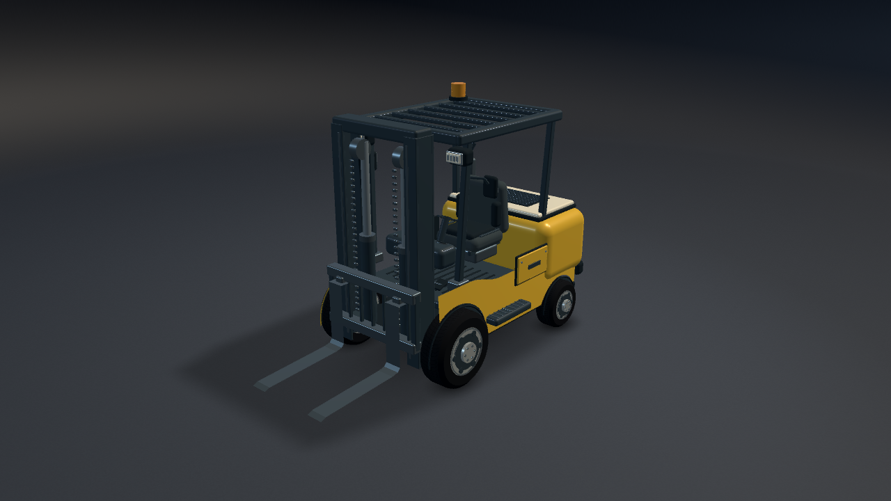
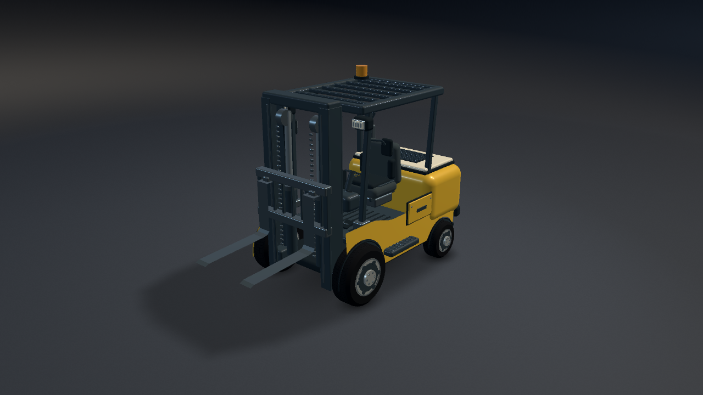
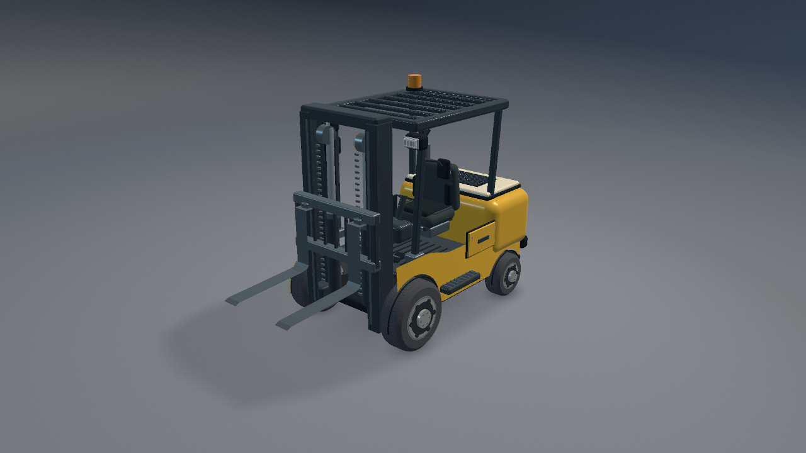
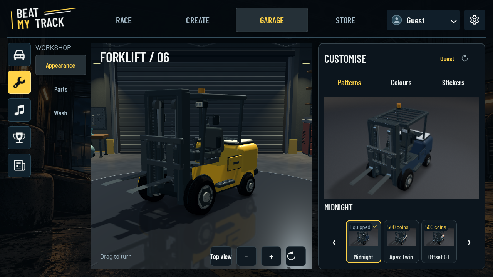

FC01-FC04/R01/Q01. Native renders from pinned Godot 4.7.2. Rear steering and detailed model retained. No physical-device test performed.
| Measurement | Before | After |
|---|---|---|
| Top speed | 43.2 km/h | 66.6 km/h |
| Fork underside | 0.158 m | 0.686 m |
| Sampled ramp clearance | -0.327 m | +0.218 m |
| Body collision radius | 1.85 m | 1.40 m |
| Turn radius at 66.6 km/h | 12.676 m | 8.149 m |
All 36 narrow-bridge traversals clear with exact replays. Rail collisions remain. Final clearance/turning 152/0, native 98/106/106, all-car 143/0, existing bridges 16/0, parser 1136/0, backend verifier 2 pass.




Measurements, commands, limits and hashes ? 36 bridge traversals and geometry clearance ? Scoped source checkpoint ? Native asset payload